Perspective and Clipping Transforms
Sean Erik O'Connor
November 2009-October 2010
Introduction
This notebook displays wireframe models in perspective projection.
First, some simple conversion functions.
In[866]:=
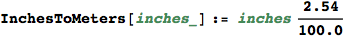
In[867]:=
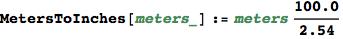
In[868]:=
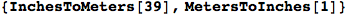
Out[868]=
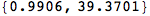
In[869]:=
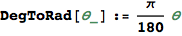
In[870]:=
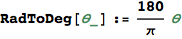
In[871]:=
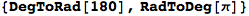
Out[871]=
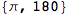
Euclidean and Homogeneous Coordinates
We'll use a left handed graphics coordinate system.
In[872]:=
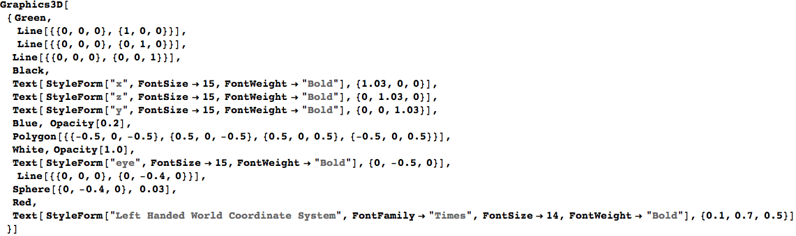
Out[872]=
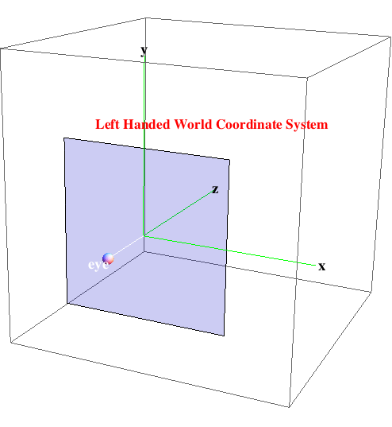
Convert between 3D Euclidean space and 4D homogeneous coordinates.
The 3D Euclidean point (x, y, z) transforms to (x, y, z, 1) in homogeneous coordinates.
In[873]:=
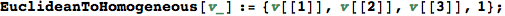
In[874]:=
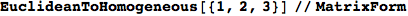
Out[874]//MatrixForm=
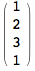
The homogeneous point (x, y, z, w) transforms to ( 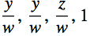
In[875]:=
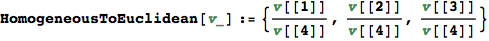
In[876]:=
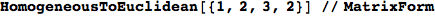
Out[876]//MatrixForm=
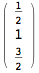
In[877]:=
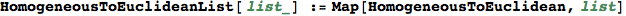
In[878]:=
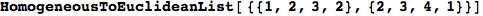
Out[878]=
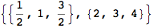
Translation and Rotation
Develop the 4D homogeneous matrices for translations and rotations. We translate/rotate the coordinate system origin.
In[879]:=
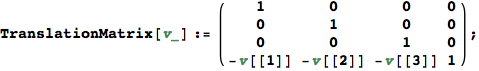
Translate the origin by vector v = (1,2,3). (1,2,3) should now map to (0,0,0).
In[880]:=
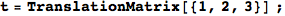
In[881]:=
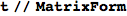
Out[881]//MatrixForm=
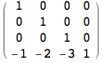
In[882]:=
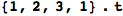
Out[882]=
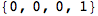
In[883]:=
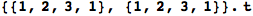
Out[883]=
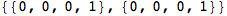
Rotate the origin by θ counterclockwise about the z axis.
In[884]:=
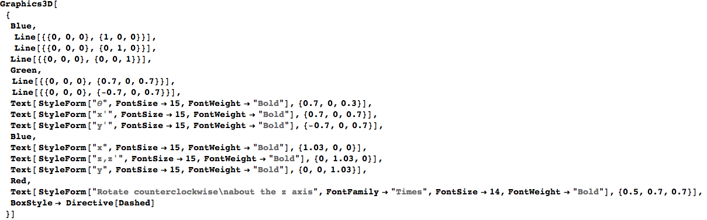
Out[884]=
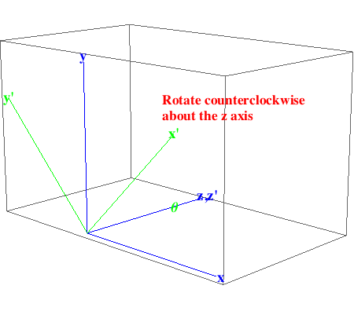
In[885]:=
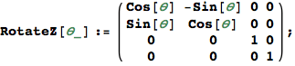
Rotate the origin by 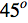 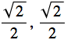
In[886]:=
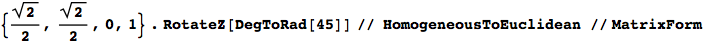
Out[886]//MatrixForm=

Rotate the origin by θ counterclockwise about the x axis.
In[887]:=
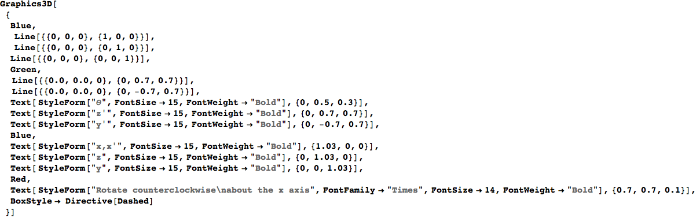
Out[887]=
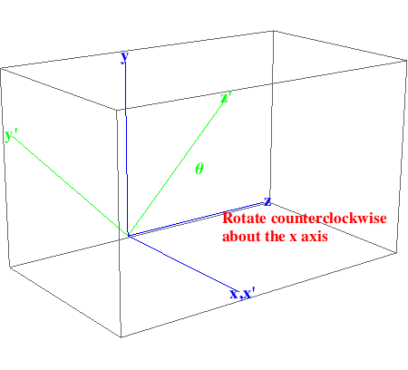
In[888]:=
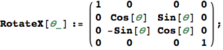
Rotate the origin by 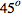 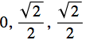 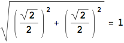
In[889]:=
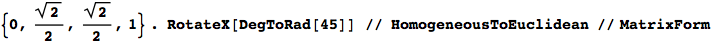
Out[889]//MatrixForm=
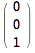
Rotate the origin by 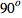
In[890]:=
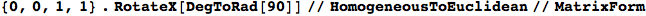
Out[890]//MatrixForm=
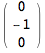
Rotate the origin by θ counterclockwise about the y axis.
In[891]:=
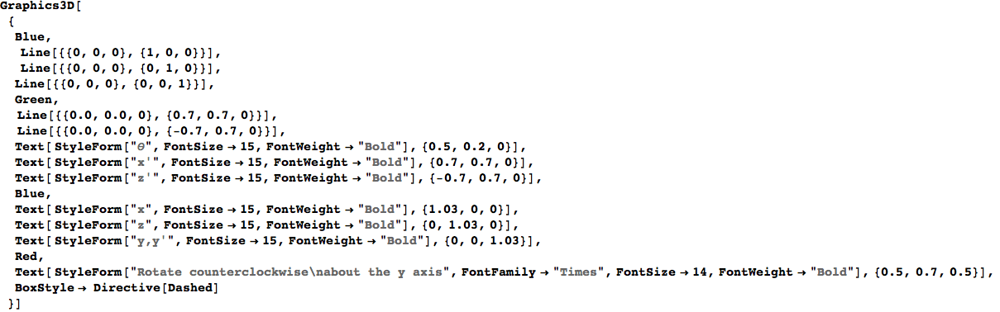
Out[891]=
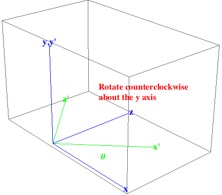
In[892]:=
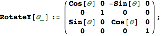
Rotate the origin by 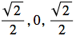 counterclockwise about the y axis. The point (
counterclockwise about the y axis. The point (
In[893]:=
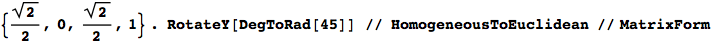
Out[893]//MatrixForm=
Perspective Projection
The perspective matrix lives in homogeneous coordinate space and maps the viewing frustrum to a unit parallelepiped for simplicity in clipping.
The eye is at the origin of the perspective view which forms a rectilinear cone.
The picture plane has width = wPP, height = hPP.
The distance from the eye to the picture plane is dPP and the distance from the eye to the far plane is dFP.
Try out translation and rotation.
In[894]:=
In[895]:=
In[896]:=
Out[896]//MatrixForm=
Helper function to project points (x,y,z) in 3D to (x,y) in 2D.
In[897]:=
In[898]:=
Out[898]=
Points on the near plane corners transform to normalized picture plane corners.
In[899]:=
Out[899]=
Point on the far plane corners transform to normalized picture plane corners.
In[900]:=
Out[900]=
General points (x,y,z) transform to
In[901]:=
Out[901]=
Points in normalized homogeneous perspective space project down the the 2D picture plane.
In[902]:=
In[903]:=
Out[903]=
2. Clipping
Clip a homogeneous point in perspective projection to the bounds of the viewing frustrum.
In[904]:=
Test it out. Clipping should be false, then true for this example.
In[905]:=
Out[905]=
In[906]:=
Out[906]=
Wire Frame Components
Circle in yz plane using left handed coordinate system, with variable spacing of points.
In[907]:=
Arrange the graph with +x to the right, +y upwards, and -z into the picture so we model a left handed viewing coordinate system.
In[908]:=
Out[908]=
In[909]:=
In[910]:=
Arrange the graph with +x to the right, +y upwards, and -z into the picture so we model a left handed viewing coordinate system.
In[911]:=
Out[911]=
Models and Views for a Real Table
In[912]:=
Calibrate by doing a simple view of a table top model.
Wire frame model of table top.
In[916]:=
Wire frame model of table top. Arrange the graph with +x to the right, +y upwards, and -z into the picture so we model a left handed viewing coordinate system.
In[917]:=
In[918]:=
Out[918]=
Perspective view.
In[919]:=
Quick test. Find a world coordinate point which maps to the center of the view.
In[920]:=
Out[920]=
Perpective view of the table.
In[921]:=
Out[921]=
Orbital Model and View
Our orbital!
In[922]:=
Angular spacing between points on the orbital circle having a radial distance of 100 km.
In[923]:=
Check gravity on the orbital.
In[924]:=
Out[925]=
Picture plane dimensions. Width and height are of my painting canvas. Distance to picture plane from eye seems reasonable.
In[926]:=
In[930]:=
Arrange the graph with +x to the right, +y upwards, and -z into the picture so we model a left handed viewing coordinate system.
In[931]:=
Out[931]=
In[932]:=
Plot a few points on the midpoint of the orbital circle to debug the perspectivc clipping.
In[933]:=
Out[934]//MatrixForm=
In[935]:=
Out[935]//MatrixForm=
In[936]:=
View the orbital in perspective from our chosen vantage point.
In[937]:=
Out[937]=